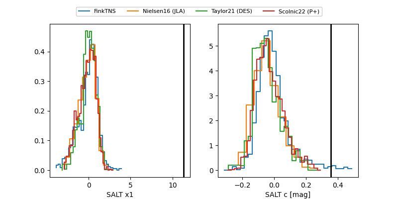

FINK: ZTF25abngzed
Lasair: ZTF25abngzed
ALeRCE: ZTF25abngzed
ZTF25abngzed (ztf,fink)
equatorial (ra, dec) = (24.7497,+4.96203)
galactic (l, b) = (144.4166,-55.91305)

last ztfg=20.20, ztfr=19.98
2 ztfg, 3 ztfr detections